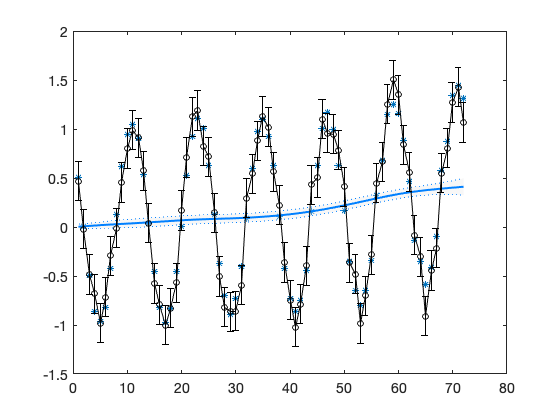
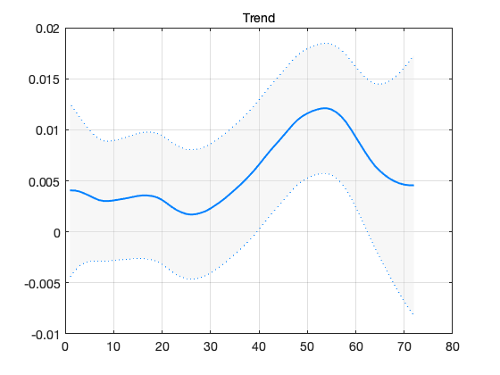
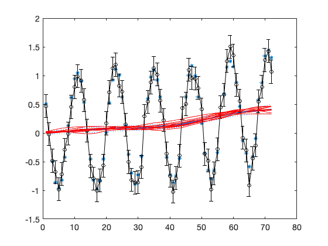
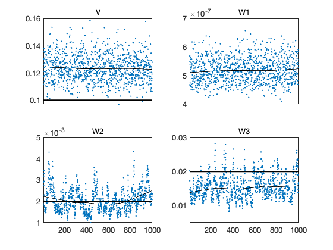
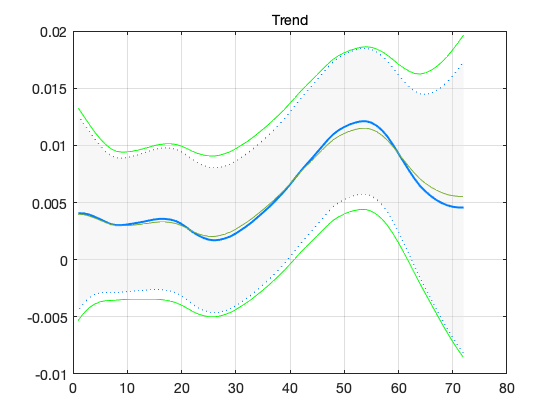

DLM demo no 1
Generate synthetic and ideal data and fit a DLM smoother. The command dlmgensys generates system evolution matrix G and obs operator F. We use local level and trend model with 12 seasons.
[G,F] = dlmgensys(struct('order',1,'fullseas',1,'ns',12)); % p = number of data sets = 1, % m = number of internal states = 13 [p,m] = size(F);
Generate data.
t = (1:1:(6*12))'; % time n = length(t); s = 0.1; % obs error std V = ones(n,p)*s; % V is matrix of std's x0 = [0;0.001;sin((1:11)/12*pi*2)']; % initial state C0 = 0.02*eye(m)*s^2; % initial state uncertainty W = zeros(m); % "model error" W(1,1) = 0.000002^2; W(2,2) = 0.002.^2; W(3,3) = 0.02.^2;
Observations are generated using the state space recursion.
y = zeros(n,1); x = x0; for i=1:n y(i) = F*x + randn(1,1)*s; x = G*x + randn(m,1).*sqrt(diag(W)); end
Function dlmsmo calculates the estimated states using Kalman smoother.
out = dlmsmo(y,F,V,x0,G,W,C0);
x0 = out.x(:,1); % save smoothed estimate of x0
Plot observations and the fitted level with 95% (time wise) confidence bands.
figure(1); clf plot(t,out.yhat,'*') hold on confband(t,out.x(1,:)',out.xstd(:,1)); errorbar(t,y,2*V,'ok-') hold off
figure(2); clf
confband(t,out.x(2,:)',out.xstd(:,2)); grid; title('Trend')
 MCMC
Gibbs sampling for the variance parameters using conjugate prior distributions. This takes some time.
nsimu = 1000; chain = zeros(nsimu,4); W0 = W; % prior W n0 = 5; % prior weight V0 = s; nv0 = 10; doplot = 1; plotint = 100;
hw = waitbar(0,'MCMC running, please wait'); for isimu = 1:nsimu waitbar(isimu/nsimu,hw); % Gibbs step for variance parameters % residual std for V, conjugate distribution is inverse chi squared sigV = sqrt(invchir(1,1,n+nv0,(out.ssy+V0.^2*nv0)/(n+nv0))); V = ones(n,p)*sigV; out = dlmsmo(y,F,V,x0,G,W,C0); % recalculate with new V % variances in diag(W) c = zeros(1,3); % fit 3 first variances for i=1:3 c(i) = invchir(1,1,n+n0-1,(W0(i,i).*n0+out.ss(i))./(n+n0-1)); W(i,i) = c(i); out = dlmsmo(y,F,V,x0,G,W,C0); % recalculate smoother end chain(isimu,:) = [sigV,sqrt(c(1:3))]; if doplot & (isimu/plotint == fix(isimu/plotint)) % plot every plotint'th MCMC sampled state figure(1); hold on plot(t,out.xr(1,:),'-r') hold off end end close(hw);
figure(3); clf
mcmcplot(chain,[],{'V','W1','W2','W3'});
hold on
subplot(2,2,1); h=hline(s);set(h,'linestyle','-','linewidth',2)
subplot(2,2,2); h=hline(sqrt(W0(1,1)));set(h,'linestyle','-','linewidth',2)
subplot(2,2,3); h=hline(sqrt(W0(2,2)));set(h,'linestyle','-','linewidth',2)
subplot(2,2,4); h=hline(sqrt(W0(3,3)));set(h,'linestyle','-','linewidth',2)
hold off
V = ones(n,p)*sqrt(mean(chain(:,1).^2));
for i=1:3; W(i,i) = mean(chain(:,i+1).^2); end
out = dlmsmo(y,F,V,x0,G,W,C0);
 Add estimated over the initial trend.
figure(2); ind = 2; % xxx = out.x(ind,:)'; hold on plot(t,xxx) plot(t,xxx-2*out.xstd(:,ind),'g-') plot(t,xxx+2*out.xstd(:,ind),'g-') hold off